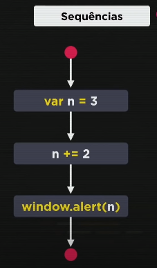
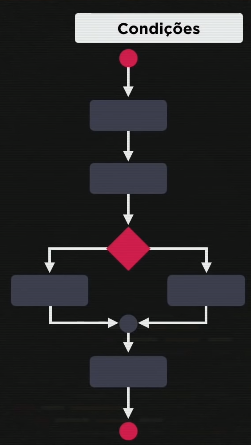
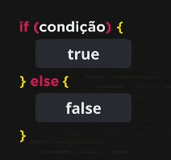
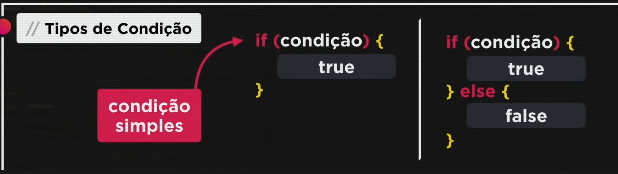

Antes de falar de condições, iremos revisar nossos códigos aprendidos nesse curso, que são códigos sequenciais, ou seja, os códigos são em sequência e não podem ser resolvidos fora de ordem. Exemplo:
A segunda linha de código não pode ser executada antes da primeira ou depois da tericeira, por exemplo. É nessa hora que apresentamos as condições.
Nossas linhas de códigos agora não serão mais em sequência, tendo bifurcações nelas, podendo ir para algum dos lados dependendo de nossa condição. Exemplo:
A sintaxe da condição é:
if (condição) { true } else { false }
Condição simples: só tem um tipo de bloco
if (condição) { true } // é chamada de condição simples.
Condição composta: tem dois blocos com true e false
if (condição) { true } else { false }
Veja os exercícios 008 e 009 e 010
Exercício 011